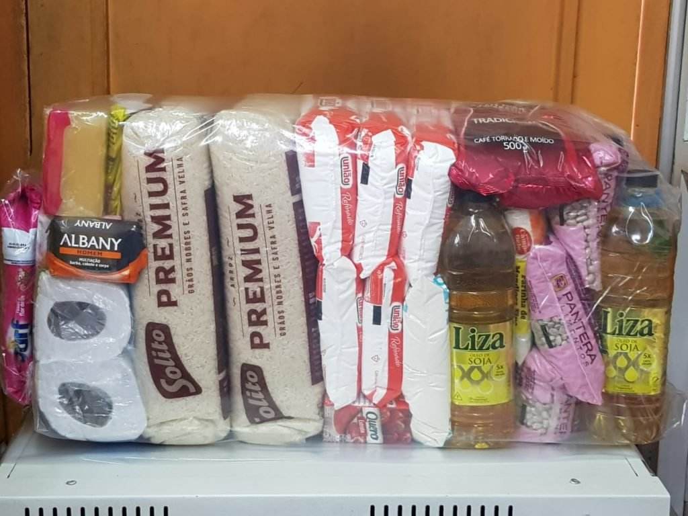

01
Cesta Básica de Qualidade
Cestas com produtos selecionados para motivar os colaboradores da sua empresa.
Cestas básicas de qualidade para a sua empresa, produtos de higiene e descartáveis. Tudo o que o seu negócio consome, das melhores marcas.
Pedir orçamento no WhatsApp
Fornecimento de produtos de consumo para empresas, com condições especiais para convênios com entidades e empresas.
Cestas com produtos selecionados para motivar os colaboradores da sua empresa.
Produtos de limpeza para ambientes comerciais e residenciais.
Descartáveis para eventos corporativos, workshops e treinamentos.
Escolha o que precisa e envie a mensagem pronta pelo WhatsApp. Nada fica armazenado neste site.
Na Rua Cerqueira César, 929, Jardim Santa Tereza, em Embu das Artes (SP).
Use o formulário acima ou chame no WhatsApp (11) 94714-9425 informando o que precisa e a quantidade.
Sim. Trabalhamos com convênios com diversas entidades e empresas, com condições favoráveis.
Cestas básicas, produtos de higiene e limpeza e linha de descartáveis, das melhores marcas.